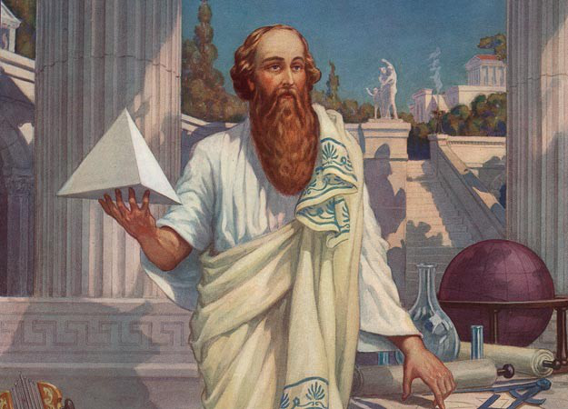
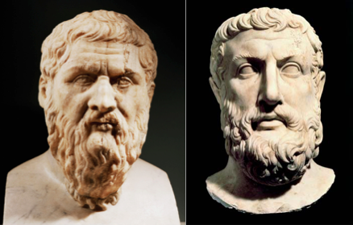

Influencias de Platón
Pitágoras
Aunque Sócrates influenció a Platón directamente como se relaciona en los diálogos, la influencia de Pitágoras sobre Platón, o en un sentido más amplio, los pitagóricos, como Arquitas, también parece haber sido significativa. Aristóteles afirmó que la filosofía de Platón siguió de cerca las enseñanzas de los pitagóricos y Cicerón repite esta afirmación.Pitágoras sostuvo que todas las cosas son números, y el cosmos proviene de principios numéricos. Introdujo el concepto de forma como algo distinto de la materia, y que el mundo físico es una imitación de un mundo matemático eterno.
Numenio de Apamea aceptó tanto a Pitágoras como a Platón como las dos autoridades que uno debería seguir en filosofía, pero consideraba que la autoridad de Platón estaba subordinada a la de Pitágoras, a quien consideraba la fuente de toda filosofía verdadera, incluida la propia de Platón.
Heráclito y Parménides
Los dos filósofos Heráclito y Parménides, siguiendo el camino iniciado por los filósofos griegos presocráticos como Pitágoras, se apartan de la mitología y comienzan la tradición metafísica que influyó fuertemente en Platón y continúa hoy.
Los fragmentos supervivientes escritos por Heráclito sugieren la idea de que todas las cosas cambian o se convierten continuamente. Su imagen del río, con aguas siempre cambiantes, es bien conocida. Platón recibió estas ideas a través del discípulo de Heráclito, Crátilo, quien sostenía la visión más radical de que el cambio continuo justifica el escepticismo porque no podemos definir algo que no tiene una naturaleza permanente.
Parménides adoptó una visión totalmente contraria, argumentando a favor de la idea del Ser inmutable y la opinión de que el cambio es una ilusión y como tal, lo califica como el fundador de la metafísica u ontología como un dominio de indagación distinta de la teología.
Estas ideas sobre el cambio y la permanencia, o el devenir y el ser, influyeron en Platón al formular su teoría de las formas.
El diálogo más autocrítico de Platón se llama Parménides, en el que aparece Parménides y su alumno Zenón, quien tras la negación del cambio de Parménides discutió enérgicamente con sus paradojas para negar la existencia del movimiento. El diálogo Sofista de Platón incluye a un eleático seguidor de Parménides. En el diálogo, Platón argumenta que el movimiento y el descanso "son", contra los seguidores de Parménides que dicen que el descanso es pero el movimiento no es.
Sócrates
Platón fue uno de los devotos seguidores jóvenes de Sócrates. La relación precisa entre Platón y Sócrates sigue siendo un área de discusión entre los estudiosos.
Aristóteles atribuye una doctrina diferente con respecto a las formas a Platón y Sócrates. Aristóteles sugiere que la idea de las formas de Sócrates se puede descubrir a través de la investigación del mundo natural, a diferencia de las Formas de Platón que existen más allá y fuera del rango ordinario de la comprensión humana.
Según la Carta VII, Platón veía a Sócrates como "el más justo de los hombres de su tiempo" (324e).Según Diógenes Laercio, el respeto entre ambos era mutuo.a Carta II, dice "yo nunca he escrito nada, y no hay ni habrá jamás obras de Platón; las que se me atribuyen son de Sócrates".Sin embargo, esta última carta se considera que es una falsificación.